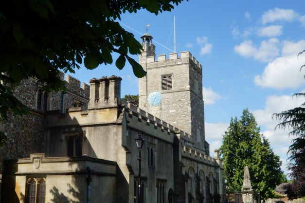

William Isum 1651-1720
Family Name
Information
Justice of the Peace of Northamptonshire
Wars of the Roses
 Robert Isham/Isome 1621 - 1662
Robert Isham/Isome 1621 - 1662
Ancestor of Ishams and Isoms in Northamptonshire and Utah
Robt Isome sone of William and Marie his wife christened 30 September 1621
"> Baptismal Font in Church of St.Mary in CheshuntRobert was christened here in 1621
"> Robert Isham age 14Passenger on the Globe bound for Virginia
"> Parish Records of Green's NortonRobert Isum and Jane Clubber were married 26 January 1642
"> Parish Records of Green's NortonJohn Isome son of Robt Isome and Jane his wife was baptized April the 7th 1644
">Robert's Isham ancestors had lived in Northamptonshire and London since at least 1300.
In 1621, a parish priest christened Robert in Cheshunt, a village 15 miles north of London. Robert's parents, William and Marie Isome, had moved to Cheshunt from London in the spring of 1620.
The death of his mother Marie in 1634 left Robert motherless at age 13. The following year, Robert voyaged from London to Virigina aboard a ship named the Globe. His shipmate on the voyage was his 20-year-old uncle Edward Cleborne, son of James Cleborne.
Robert labored as a servant in Virginia for several years. The work in Virginia was difficult. Marriage opportunities were few. With good reason, Robert returned to England. There, he settled in the village of Green's Norton, Northamptonshire.
Robert married Jane Clubber on 26 January 1643 in Green's Norton. Together, they had at least three children before Robert died at age 40 in April 1662. Six generations of descendants lived and labored in villages near Green's Norton.
Today, Robert has descendants throughout England, the United States, and Australia.
We are happy you dropped in! Enjoy learning about Robert, his ancestors, and his descendants.
In 2021, one of Robert's patrlineal descendants took a Y-DNA test that was critical in understanding the story of Robert's life. Before the DNA test, there was uncertainty about who Robert's parents and grandparents were, and we didn't know the story of his life before he married Jane Clubber in Green's Norton in 1642.
 Although researchers had known that a Robert Isome was christened in Cheshunt in 1621 as the son of William Isome and Marie Harding, they were reluctant to commit that this Robert was the same as the Robert who married Jane Clubber in 1642. The Y-DNA evidence confirmed that Robert of Green's Norton was the same Robert who was christened in Cheshunt. Further, it allowed us to identify William's parents.
Furthermore, the Y-DNA evidence showed that Robert of Cheshunt and Green's Norton was also the same Robert who sailed to Virginia on the Globe in 1635, accompanied by his uncle Edward Cleburne.
Justice of the Peace of Northamptonshire
Wars of the Roses
Homesteader in the red rock landscape of Mountain Dell
Married to Elizabeth Howard
Married Katherine Wolfe
William and Katherine had eleven children
Lifelong resident of Hurricane
William and Katherine had eleven children
I am an eleventh-generation descendant of Robert, and have been researching the Ishams and Isoms for over twenty-five years. I grew up in Utah and have visited Northamptonshire twice.
If you have something you would like to add or if you would like to submit documents for inclusion on this web, please let me know .